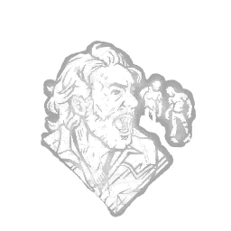

来抓我呀！ Come and Get Me!
所属：瑞克·格莱姆斯（逃生者）
| 等级 | 档位 1 | 档位 2 | 档位 3 |
|---|---|---|---|
| 数值 | 10 1 | 12.5 | 15 |
描述
“你会冒着生命危险去拯救他人。”成功将逃生者从钩子上放下后，保持蹲伏且静止不动的状态，按下主动技能按钮以触发以下效果：抑制你所在位置24米范围内痛苦呻吟者、血迹与抓痕的生成，持续10/12.5/15秒；使你发出尖叫并暴露自身轮廓，持续5秒。 “我们才是活下来的人。”——瑞克·格莱姆斯

所属：瑞克·格莱姆斯（逃生者）
| 等级 | 档位 1 | 档位 2 | 档位 3 |
|---|---|---|---|
| 数值 | 10 1 | 12.5 | 15 |
“你会冒着生命危险去拯救他人。”成功将逃生者从钩子上放下后，保持蹲伏且静止不动的状态，按下主动技能按钮以触发以下效果：抑制你所在位置24米范围内痛苦呻吟者、血迹与抓痕的生成，持续10/12.5/15秒；使你发出尖叫并暴露自身轮廓，持续5秒。 “我们才是活下来的人。”——瑞克·格莱姆斯